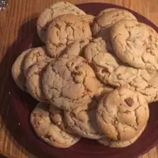

Cake mix cookies
Cake mix cookies

Description
These cake mix cookies are yummy and simple to make with just 3 easy ingredients!
Ingredients
- 1 (18.25 ounce) package white cake mix
- ½ cup vegetable oil
- 2 eggs
Steps
- Preheat oven to 350 degrees F (175 degrees C).
- Beat peanut butter, white sugar, and brown sugar together in a large bowl with an electric mixer until smooth. Stir egg, vanilla extract, and baking soda into peanut butter mixture; stir in chocolate chips.
- Drop mixture by small rounded spoonfuls onto a baking sheet about 2 inches apart.
- Bake in the preheated oven until cookies are flattened and golden, about 8 minutes.
Other recipes